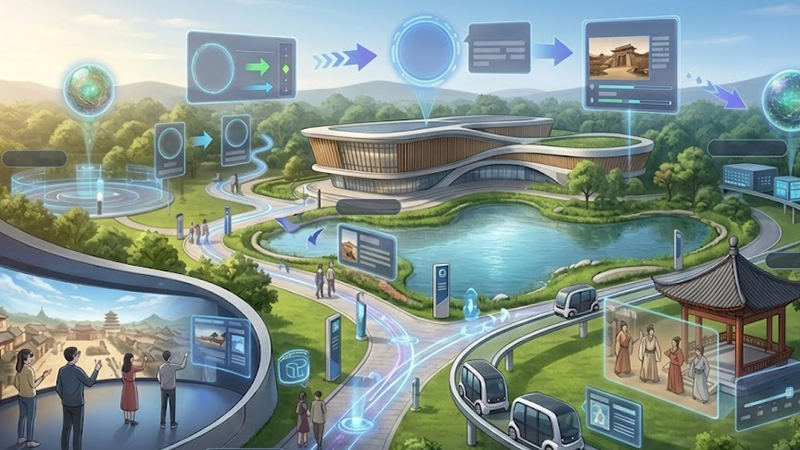

核心业务
全场景智能生态
我们的技术能够适应不同行业的特定韵律，确保进步永不以牺牲人类体验为代价。



以匠心致创新
我们不仅在构建技术，更是在打造通过精密的直觉工程赋能人类潜力的工具。

自适应AI架构
我们的神经网络能够从真实场景的使用模式中学习，实现无需人工干预的自主进化。
energy_savings_leaf
可持续数字底座
每一行代码都经过能效优化，大幅降低数字化带来的碳足迹。
security
零信任架构
深度嵌入的加密技术保护锦致科技网络中的每一个节点。
工程技术 全球影响
40%
能效提升
在欧洲智能建筑实施案例中达成。
1.2M
日活跃节点
连接跨越三大洲的社区。
24/7
实时全天候监测
关键基础设施的预测性维护。
0.5ms
边缘延迟
为安全关键系统提供近乎即时的处理。
网络脉搏实时动态
运行状态良好
系统负载
22%
全球带宽
84%
AI效能
99.8%

准备好共建未来了吗？
加入领先组织，利用锦致科技构建更具韧性、以人为本的基础设施。